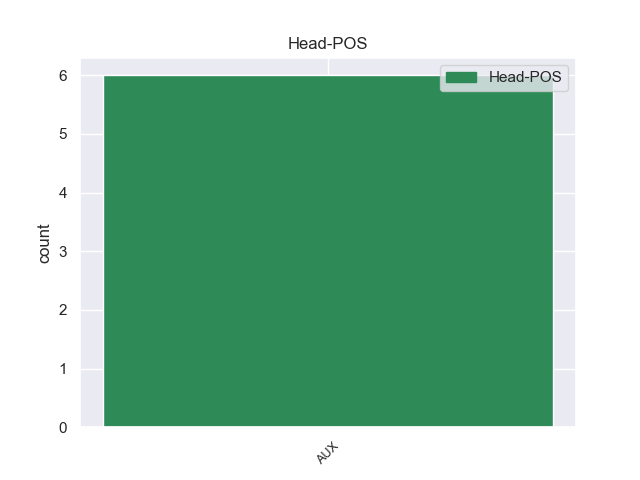
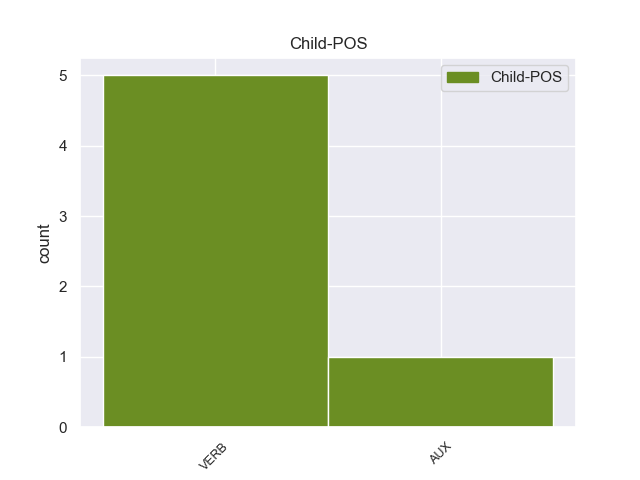

Distribution of features within this leaf


Agreement Rules sorted by frequency.
- When the dependent token is the conjunct(conj) of the head token,
1 He _ _ _ _ 0 _ _ _
2 said say VERB VBD Mood=Ind|Tense=Past|VerbForm=Fin 0 _ _ _
3 it _ _ _ _ 0 _ _ _
4 was _ _ _ _ 0 _ _ _
5 the _ _ _ _ 0 _ _ _
6 same _ _ _ _ 0 _ _ _
7 tire _ _ _ _ 0 _ _ _
8 , _ _ _ _ 0 _ _ _
9 and _ _ _ _ 0 _ _ _
10 verified verify VERB VBD Mood=Ind|Tense=Past|VerbForm=Fin 2 conj 2:conj:and _
11 this _ _ _ _ 0 _ _ _
12 , _ _ _ _ 0 _ _ _
13 after _ _ _ _ 0 _ _ _
14 checking _ _ _ _ 0 _ _ _
15 both _ _ _ _ 0 _ _ _
16 the _ _ _ _ 0 _ _ _
17 actual _ _ _ _ 0 _ _ _
18 tire _ _ _ _ 0 _ _ _
19 on _ _ _ _ 0 _ _ _
20 my _ _ _ _ 0 _ _ _
21 car _ _ _ _ 0 _ _ _
22 and _ _ _ _ 0 _ _ _
23 my _ _ _ _ 0 _ _ _
24 service _ _ _ _ 0 _ _ _
25 papers _ _ _ _ 0 _ _ _
26 from _ _ _ _ 0 _ _ _
27 earlier _ _ _ _ 0 _ _ _
28 in _ _ _ _ 0 _ _ _
29 the _ _ _ _ 0 _ _ _
30 week _ _ _ _ 0 _ _ _
31 . _ _ _ _ 0 _ _ _
1 So _ _ _ _ 0 _ _ _
2 I _ _ _ _ 0 _ _ _
3 pointed _ _ _ _ 0 _ _ _
4 this _ _ _ _ 0 _ _ _
5 out _ _ _ _ 0 _ _ _
6 to _ _ _ _ 0 _ _ _
7 him _ _ _ _ 0 _ _ _
8 , _ _ _ _ 0 _ _ _
9 at _ _ _ _ 0 _ _ _
10 which _ _ _ _ 0 _ _ _
11 point _ _ _ _ 0 _ _ _
12 he _ _ _ _ 0 _ _ _
13 said say VERB VBD Mood=Ind|Tense=Past|VerbForm=Fin 0 _ _ _
14 they _ _ _ _ 0 _ _ _
15 only _ _ _ _ 0 _ _ _
16 had have VERB VBD Mood=Ind|Tense=Past|VerbForm=Fin 13 ccomp 13:ccomp _
17 one _ _ _ _ 0 _ _ _
18 of _ _ _ _ 0 _ _ _
19 the _ _ _ _ 0 _ _ _
20 correct _ _ _ _ 0 _ _ _
21 tires _ _ _ _ 0 _ _ _
22 in _ _ _ _ 0 _ _ _
23 stock _ _ _ _ 0 _ _ _
24 . _ _ _ _ 0 _ _ _
1 What _ _ _ _ 0 _ _ _
2 made make VERB VBD Mood=Ind|Tense=Past|VerbForm=Fin 5 csubj 5:csubj _
3 it _ _ _ _ 0 _ _ _
4 perfect _ _ _ _ 0 _ _ _
5 was be VERB VBD Mood=Ind|Number=Sing|Tense=Past|VerbForm=Fin 0 _ _ _
6 that _ _ _ _ 0 _ _ _
7 they _ _ _ _ 0 _ _ _
8 offered _ _ _ _ 0 _ _ _
9 transportation _ _ _ _ 0 _ _ _
10 so _ _ _ _ 0 _ _ _
11 that _ _ _ _ 0 _ _ _
12 I _ _ _ _ 0 _ _ _
13 would _ _ _ _ 0 _ _ _
14 not _ _ _ _ 0 _ _ _
15 have _ _ _ _ 0 _ _ _
16 to _ _ _ _ 0 _ _ _
17 wait _ _ _ _ 0 _ _ _
18 there _ _ _ _ 0 _ _ _
19 or _ _ _ _ 0 _ _ _
20 take _ _ _ _ 0 _ _ _
21 time _ _ _ _ 0 _ _ _
22 off _ _ _ _ 0 _ _ _
23 of _ _ _ _ 0 _ _ _
24 work _ _ _ _ 0 _ _ _
25 to _ _ _ _ 0 _ _ _
26 go _ _ _ _ 0 _ _ _
27 back _ _ _ _ 0 _ _ _
28 and _ _ _ _ 0 _ _ _
29 forth _ _ _ _ 0 _ _ _
30 or _ _ _ _ 0 _ _ _
31 try _ _ _ _ 0 _ _ _
32 to _ _ _ _ 0 _ _ _
33 find _ _ _ _ 0 _ _ _
34 a _ _ _ _ 0 _ _ _
35 ride _ _ _ _ 0 _ _ _
36 . _ _ _ _ 0 _ _ _
Disagree Examples:
1 " _ _ _ _ 0 _ _ _
2 Wait wait VERB VB Mood=Imp|VerbForm=Fin 12 ccomp 12:ccomp SpaceAfter=No
3 , _ _ _ _ 0 _ _ _
4 wait _ _ _ _ 0 _ _ _
5 , _ _ _ _ 0 _ _ _
6 is _ _ _ _ 0 _ _ _
7 this _ _ _ _ 0 _ _ _
8 50 _ _ _ _ 0 _ _ _
9 questions _ _ _ _ 0 _ _ _
10 ? _ _ _ _ 0 _ _ _
11 " _ _ _ _ 0 _ _ _
12 asked ask VERB VBD Mood=Ind|Tense=Past|VerbForm=Fin 0 _ _ _
13 Bush _ _ _ _ 0 _ _ _
14 . _ _ _ _ 0 _ _ _
1 ( _ _ _ _ 0 _ _ _
2 Newsweek _ _ _ _ 0 _ _ _
3 reported _ _ _ _ 0 _ _ _
4 that _ _ _ _ 0 _ _ _
5 Bush _ _ _ _ 0 _ _ _
6 commanded command VERB VBD Mood=Ind|Tense=Past|VerbForm=Fin 0 _ _ _
7 his _ _ _ _ 0 _ _ _
8 cabinet _ _ _ _ 0 _ _ _
9 , _ _ _ _ 0 _ _ _
10 " _ _ _ _ 0 _ _ _
11 Let let VERB VB Mood=Imp|VerbForm=Fin 6 ccomp 6:ccomp _
12 heads _ _ _ _ 0 _ _ _
13 roll _ _ _ _ 0 _ _ _
14 ! _ _ _ _ 0 _ _ _
15 " _ _ _ _ 0 _ _ _
16 ) _ _ _ _ 0 _ _ _
1 Ask ask VERB VB Mood=Imp|VerbForm=Fin 0 _ _ _
2 her _ _ _ _ 0 _ _ _
3 about _ _ _ _ 0 _ _ _
4 the _ _ _ _ 0 _ _ _
5 handsome _ _ _ _ 0 _ _ _
6 young _ _ _ _ 0 _ _ _
7 man _ _ _ _ 0 _ _ _
8 from _ _ _ _ 0 _ _ _
9 Texas _ _ _ _ 0 _ _ _
10 , _ _ _ _ 0 _ _ _
11 and _ _ _ _ 0 _ _ _
12 she _ _ _ _ 0 _ _ _
13 remembers remember VERB VBZ Mood=Ind|Number=Sing|Person=3|Tense=Pres|VerbForm=Fin 1 conj 1:conj:and _
14 him _ _ _ _ 0 _ _ _
15 32 _ _ _ _ 0 _ _ _
16 years _ _ _ _ 0 _ _ _
17 later _ _ _ _ 0 _ _ _
18 like _ _ _ _ 0 _ _ _
19 it _ _ _ _ 0 _ _ _
20 was _ _ _ _ 0 _ _ _
21 yesterday _ _ _ _ 0 _ _ _
22 . _ _ _ _ 0 _ _ _
1 See see VERB VB Mood=Imp|VerbForm=Fin 0 _ _ _
2 them _ _ _ _ 0 _ _ _
3 as _ _ _ _ 0 _ _ _
4 they _ _ _ _ 0 _ _ _
5 are be VERB VBP Mood=Ind|Tense=Pres|VerbForm=Fin 1 ccomp 1:ccomp SpaceAfter=No
6 , _ _ _ _ 0 _ _ _
7 not _ _ _ _ 0 _ _ _
8 for _ _ _ _ 0 _ _ _
9 what _ _ _ _ 0 _ _ _
10 they _ _ _ _ 0 _ _ _
11 claim _ _ _ _ 0 _ _ _
12 to _ _ _ _ 0 _ _ _
13 be _ _ _ _ 0 _ _ _
14 . _ _ _ _ 0 _ _ _
1 As _ _ _ _ 0 _ _ _
2 I _ _ _ _ 0 _ _ _
3 read _ _ _ _ 0 _ _ _
4 the _ _ _ _ 0 _ _ _
5 letter _ _ _ _ 0 _ _ _
6 , _ _ _ _ 0 _ _ _
7 I _ _ _ _ 0 _ _ _
8 considered _ _ _ _ 0 _ _ _
9 the _ _ _ _ 0 _ _ _
10 vast _ _ _ _ 0 _ _ _
11 contrast _ _ _ _ 0 _ _ _
12 between _ _ _ _ 0 _ _ _
13 mind _ _ _ _ 0 _ _ _
14 and _ _ _ _ 0 _ _ _
15 morality _ _ _ _ 0 _ _ _
16 of _ _ _ _ 0 _ _ _
17 whoever _ _ _ _ 0 _ _ _
18 wrote _ _ _ _ 0 _ _ _
19 it _ _ _ _ 0 _ _ _
20 , _ _ _ _ 0 _ _ _
21 vs. _ _ _ _ 0 _ _ _
22 that _ _ _ _ 0 _ _ _
23 of _ _ _ _ 0 _ _ _
24 the _ _ _ _ 0 _ _ _
25 mind _ _ _ _ 0 _ _ _
26 of _ _ _ _ 0 _ _ _
27 the _ _ _ _ 0 _ _ _
28 man _ _ _ _ 0 _ _ _
29 who _ _ _ _ 0 _ _ _
30 once _ _ _ _ 0 _ _ _
31 said say VERB VBD Mood=Ind|Tense=Past|VerbForm=Fin 0 _ _ _
32 " _ _ _ _ 0 _ _ _
33 Bring bring VERB VB Mood=Imp|VerbForm=Fin 31 ccomp 31:ccomp _
34 it _ _ _ _ 0 _ _ _
35 on _ _ _ _ 0 _ _ _
36 ! _ _ _ _ 0 _ _ _
37 " _ _ _ _ 0 _ _ _